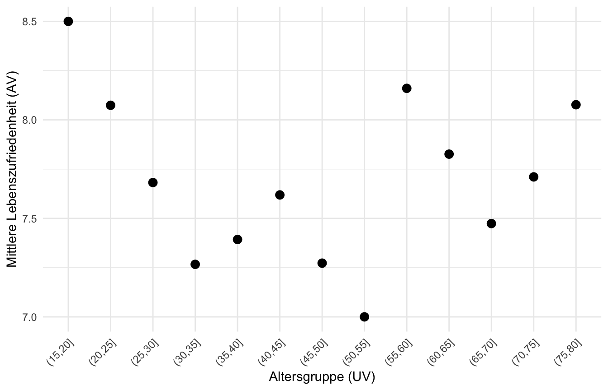
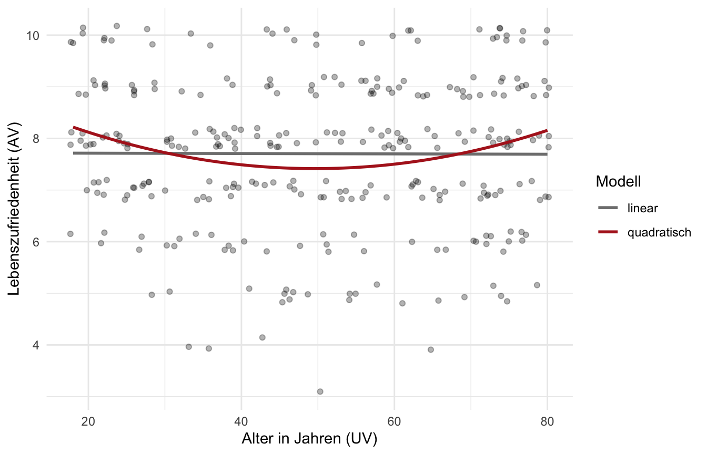

library(ggplot2) # Grafiken (Wickham, 2016)
library(here) # Dateipfade relativ zum Projektordner
befragung <- read.csv(here("Daten", "mock_befragung.csv"))Fiktives Beispiel 2: Alter und Lebenszufriedenheit
Even more interesting subtitle inserted here
1 Packages und Daten
2 Mittelwerte nach Alter
Die Lebenszufriedenheit verläuft nicht linear über das Alter: Sie sinkt bis ins mittlere Erwachsenenalter und steigt danach wieder an (Abbildung 1).
befragung$altersgruppe <- cut(befragung$alter, breaks = seq(15, 80, by = 5))
mittel <- aggregate(zufriedenheit ~ altersgruppe, data = befragung, FUN = mean)
ggplot(mittel, aes(x = altersgruppe, y = zufriedenheit)) +
geom_point(size = 3) +
labs(x = "Altersgruppe (UV)", y = "Mittlere Lebenszufriedenheit (AV)") +
theme_minimal() +
theme(axis.text.x = element_text(angle = 45, hjust = 1))
3 Quadratisches Modell
modell_lin <- lm(zufriedenheit ~ alter, data = befragung)
modell_quad <- lm(zufriedenheit ~ alter + I(alter^2), data = befragung)
summary(modell_quad)
Call:
lm(formula = zufriedenheit ~ alter + I(alter^2), data = befragung)
Residuals:
Min 1Q Median 3Q Max
-4.4149 -0.8630 0.1031 1.1370 2.5851
Coefficients:
Estimate Std. Error t value Pr(>|t|)
(Intercept) 9.3926413 0.6152741 15.266 < 2e-16 ***
alter -0.0797144 0.0273063 -2.919 0.00378 **
I(alter^2) 0.0008032 0.0002727 2.946 0.00348 **
---
Signif. codes: 0 '***' 0.001 '**' 0.01 '*' 0.05 '.' 0.1 ' ' 1
Residual standard error: 1.452 on 297 degrees of freedom
Multiple R-squared: 0.0284, Adjusted R-squared: 0.02186
F-statistic: 4.341 on 2 and 297 DF, p-value: 0.01385# Tiefpunkt der Parabel: -b1 / (2 * b2)
tiefpunkt <- -coef(modell_quad)[2] / (2 * coef(modell_quad)[3])
round(tiefpunkt, 1)alter
49.6 Das lineare Modell erklärt 0 % der Varianz, das quadratische 2.8 %. Der Tiefpunkt liegt bei etwa 50 Jahren.
ggplot(befragung, aes(x = alter, y = zufriedenheit)) +
geom_jitter(height = 0.2, alpha = 0.3) +
geom_smooth(method = "lm", formula = y ~ x, se = FALSE,
aes(colour = "linear")) +
geom_smooth(method = "lm", formula = y ~ x + I(x^2), se = FALSE,
aes(colour = "quadratisch")) +
scale_colour_manual(values = c(linear = "grey50", quadratisch = "firebrick"),
name = "Modell") +
labs(x = "Alter in Jahren (UV)", y = "Lebenszufriedenheit (AV)") +
theme_minimal()
4 Literatur
R Core Team. (2026). R: A language and environment for statistical computing (Version 4.6.1) [Software]. R Foundation for Statistical Computing. https://doi.org/10.32614/R.manuals
Wickham, H. (2016). ggplot2: Elegant graphics for data analysis (2. Aufl.). Springer. https://doi.org/10.1007/978-3-319-24277-4